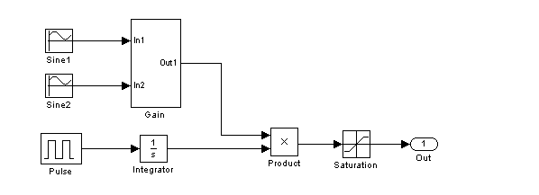
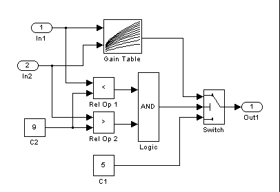

This demonstration explains how coverage information for a model is bundled in the cvdata object and how utility commands can extract information from it for an individual subsystem, block, or Stateflow object.
This example illustrates command line access of coverage data for a small model that contains aspects of all the supported coverage metrics. The model contains some blocks with coverage points at the root level and others at the subsystem level.
Use the following commands to open the model 'cv_small_controller' and its subsystem 'Gain.'
open_system('cv_small_controller'); open_system('cv_small_controller/Gain');
Simulate the model with the cvsim command. This command captures coverage data as a side-effect and returns this information in a cvdata object. The cvdata object is a MATLAB object that references the internal data stored in the coverage tool and the model data structures that produce that data.
testObj = cvtest('cv_small_controller');
testObj.settings.decision = 1;
testObj.settings.condition = 1;
testObj.settings.mcdc = 1;
testObj.settings.tableExec = 1;
testObj.settings.sigrange = 1;
data = cvsim(testObj)
data = ... cvdata
id: 143
type: TEST_DATA
test: cvtest object
rootID: 144
checksum: [4x1 struct]
startTime: 04-Sep-2003 18:17:03
stopTime: 04-Sep-2003 18:17:04
metrics: [1x1 struct]
Process the coverage data returned from a cvsim command with the report generation command cvhtml. The resulting report is a convenient representation of model coverage for the entire model.
cvhtml('tempfile.html',data);
Frequently, you want to extract information for a specific subsystem or block in the model. A coverage data object is contains series of arrays, one for each metric analyzed. Access this data using structure style references. For example, access raw decision coverage data with the following command:
data.metrics.decision
ans =
4
1
1
1
57
0
3
3
0
33
33
356
Access raw condition coverage with the following command:
data.metrics.condition
ans =
2
2
2
2
0
57
57
0
Individual elements within the raw coverage data correspond to specific coverage points within the model. The order of these points is based on the location of blocks within the Simulink and Stateflow hierarchy. Several access commands allow data to be extracted for a specific block or subsystem.
Use the decisioninfo command to extract decision coverage information for individual Simulink blocks or Stateflow objects.
The following command extracts a coverage array for the entire model. The first element is the number of coverage points satisfied for the model; the second element is the total number of coverage points for the model.
cov = decisioninfo(data,'cv_small_controller')
percent = 100*cov(1)/cov(2)
cov =
4 6
percent =
66.6667
Retrieve coverage information for the 'Saturation' block using the full path to that block. Provide a second return argument for textual descriptions of the coverage points within that block.
[blkCov, description] = decisioninfo(data,'cv_small_controller/Saturation')
decision1 = description.decision(1).text
out_1a = description.decision(1).outcome(1).text
count_1a = description.decision(1).outcome(1).executionCount
out_1b = description.decision(1).outcome(2).text
count_1b = description.decision(1).outcome(2).executionCount
blkCov =
3 4
description =
decision: [1x2 struct]
decision1 =
U > LL
out_1a =
false
count_1a =
0
out_1b =
true
count_1b =
33
Quantitative coverage information is available for every point in the hierarchy that contains or has coverage points. Textual descriptions are generated only for objects that have coverage points themselves. For example, invoke decisioninfo for the virtual subsystem Gain, and the description return value is empty.
[blkCov, description] = decisioninfo(data,'cv_small_controller/Gain')
blkCov =
1 2
description =
[]
In some cases an object has internal coverage points but also contains descendents with additional coverage points. Coverage information normally includes all the descendents unless a third argument for ignoring descendents is set to 1.
subsysOnlycov = decisioninfo(data,'cv_small_controller/Gain',1)
subsysOnlycov =
0 0
The decisioninfo command also works with block handles, Stateflow IDs, and Stateflow API objects. If an object has no decision coverage, the command returns empty outputs.
blkHandle = get_param('cv_small_controller/Saturation','Handle') blkCov = decisioninfo(data,blkHandle) missingBlkCov = decisioninfo(data,'cv_small_controller/Sine1')
blkHandle =
172.0002
blkCov =
3 4
missingBlkCov =
[]
Condition coverage indicates if the logical inputs to Boolean expressions have been evaluated to both true and false. In Simulink, conditions are the inputs to logical operations.
The conditioninfo command for extracting coverage information is very similar to the decisioninfo command. It normally returns information about an object and all its descendents, but can take a third argument that indicates if descendents should be ignored. It can also return a second output containing descriptions of each condition.
cov = conditioninfo(data,'cv_small_controller/Gain/Logic') [cov, desc] = conditioninfo(data,'cv_small_controller/Gain/Logic'); desc(1) desc(2)
cov =
2 4
ans =
text: 'port1'
trueCnts: 57
falseCnts: 0
ans =
text: 'port2'
trueCnts: 0
falseCnts: 57
MCDC coverage analyzes the objects in a model that define Boolean expressions. MCDC coverage is satisfied for a condition within a Boolean expression if there are two evaluations of the expression such that only that condition changes value and results in changing the value of the entire expression.
In some cases Boolean expressions are short circuited so that the remaining conditions are not evaluated. The coverage analysis permits conditions to change from known values to unknown values and vice versa and still treats the condition as unchanged for purposes of MCDC analysis.
In this example, the logical AND block is analyzed for MCDC coverage with an mcdcinfo command. This command uses the same syntax as conditioninfo and decisioninfo commands.
[cov, desc] = mcdcinfo(data,'cv_small_controller/Gain/Logic')
desc.condition
cov =
0 2
desc =
text: 'Output'
condition: [1x2 struct]
ans =
1x2 struct array with fields:
text
acheived
trueRslt
falseRslt
Lookup table coverage records the frequency that lookup occurs for each interpolation interval. Valid intervals for coverage purposes also include values less than the smallest breakpoint and values greater than the largest breakpoint. For consistency with the other commands this information is returned as a pair of counts with the number of intervals that executed and the total number of intervals.
A second output argument causes tableinfo to return the execution counts for all interpolation intervals. If the table has M-by-N output values, execution counts are returned in an M+1-by-N+1 matrix.
A third output argument causes tableinfo to return the counts where the input was exactly equal to the breakpoint. This is returned in a cell array of vectors, one for each dimension in the table.
[cov,execCnts,brkEq] = tableinfo(data, 'cv_small_controller/Gain/Gain Table')
cov =
23 143
execCnts =
0 0 0 0 0 0 0 0 0 0 0
0 0 0 0 0 0 0 0 0 0 0
0 0 0 2 12 14 12 2 0 0 0
0 0 5 14 0 0 0 14 0 0 0
0 0 26 0 0 0 0 0 14 0 0
0 0 23 0 0 0 0 0 54 0 0
0 0 23 0 0 0 0 0 27 0 0
0 0 7 28 0 0 0 29 3 0 0
0 0 0 4 24 21 27 4 0 0 0
0 0 0 0 0 0 0 0 0 0 0
0 0 0 0 0 0 0 0 0 0 0
brkEq =
[10x1 double] [10x1 double]
Signal range coverage records the smallest and largest value of Simulink block outputs and Stateflow data objects. The sigrangeinfo command returns two return arguments for the minimum and maximum values, respectively.
The sigrangeinfo command works only for leaf blocks that perform a computation; otherwise the command returns empty arguments.
[sigMin, sigMax] = sigrangeinfo(data,'cv_small_controller/Gain/Logic') % Leaf [sigMin, sigMax] = sigrangeinfo(data,'cv_small_controller/Gain') % Nonleaf
sigMin =
0
sigMax =
0
sigMin =
[]
sigMax =
[]
Finish the demo by closing the model.
close_system('cv_small_controller',0);